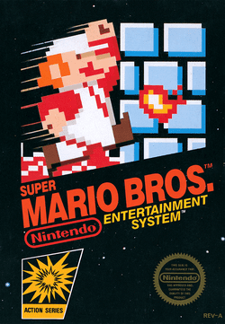

| 1958 |
Contrairement à la croyance populaire, Pong n’est pas le tout premier jeu vidéo. Ce titre revient à Tennis for Two, créé en 1958 par le physicien William Higinbotham. Ce jeu, affiché sur un oscilloscope, permettait de simuler une partie de tennis en temps réel. |

|
| 1972 |
La naissance de Pong : Pong, l’un des premiers jeux vidéo à succès commercial, a été inspiré par le jeu Tennis for Two. Créé par Atari en 1972, Pong a marqué le début de l’industrie du jeu vidéo grand public. |

|
| 1971 |
Le premier jeu d’arcade : Galaxy Game, sorti en 1971, est considéré comme le premier jeu d’arcade. Il s’agissait d’une reprogrammation du jeu Spacewar! de 1962, adaptée pour les bornes d’arcade. |
 |
| 1972 |
La première console de salon : La Magnavox Odyssey, lancée en 1972, est reconnue comme la première console de jeux vidéo domestique. Elle permettait de jouer à des jeux simples sur un téléviseur, marquant le début de l’ère des consoles de salon. |
 |
| 1984 |
Le jeu le plus vendu de tous les temps : Tetris, sorti en 1984, est le jeu vidéo le plus vendu de l’histoire, avec plus de 565 millions d’exemplaires écoulés à ce jour. Sa simplicité et son addictivité ont traversé les générations. |
 |
| 1985 |
La franchise la plus populaire : Super Mario, avec environ 680 millions d’exemplaires vendus à travers le monde, est la franchise de jeux vidéo la plus populaire. Le premier opus, Super Mario Bros., est sorti en 1985 sur la NES. |
 |
| 2018 |
Le jeu vidéo le plus cher jamais créé : Red Dead Redemption II, sorti en 2018, est le jeu vidéo le plus coûteux jamais développé, avec un budget de plus de 800 millions de dollars. Cette somme a permis de créer un monde ouvert d’une richesse inégalée. |
 |